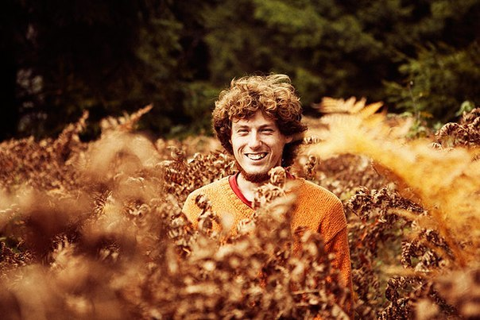

 Лобач Артем Александрович Artem Lobach Лобач Арцём Аляксандравич
(1987, Борисов) — белорусский кинорежисер, клипмейкер, автор музыкальных клипов, документальных фильмов. (1987, Borisov) — Belorussian director, clip-maker, author of the different music clips, documentary films. (1987, Барысаў) — беларускі кінарэжысёр, кліпмэйкер, аўтар музычных кліпаў, дакументальных фільмаў.
2008
Скончыў Мінскае мастацкае вучылішча імя Глебава
Graduated from the Minsk Art School named after Glebov
Окончил Минское художественное училище имени Глебова
2008
Автор документального фильма "Гродно. Новый мир".
Author of documentary: "Grodno. New World".
Аўтар дакументальнага фільма «Гродна. Новы свет».
2009
Автор документального фильма "Калеты".
Author of documentary: "Kalety"
Аўтар дакументальнага фільма «Калеты».
2012
Автор документального фильма "Простые вещи".
Author of documentary: "Simle Things".
Аўтар дакументальнага фільма «Простыя рэчы».
Список работ: List of Works: Списак работ:
- 2008 Гродно. Новый мир Grodno. New World Гродна. Новы свет
- 2009 Калеты Kalety Калеты
- 2012 Простые вещи Siimple things Простыя рэчы
{kind=link}
{kind=link}
{kind=link}
{kind=link}
{kind=link}